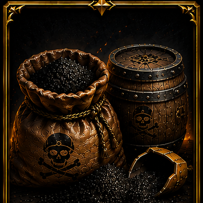
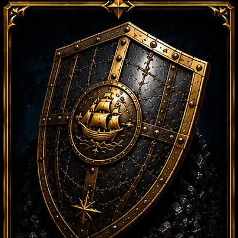
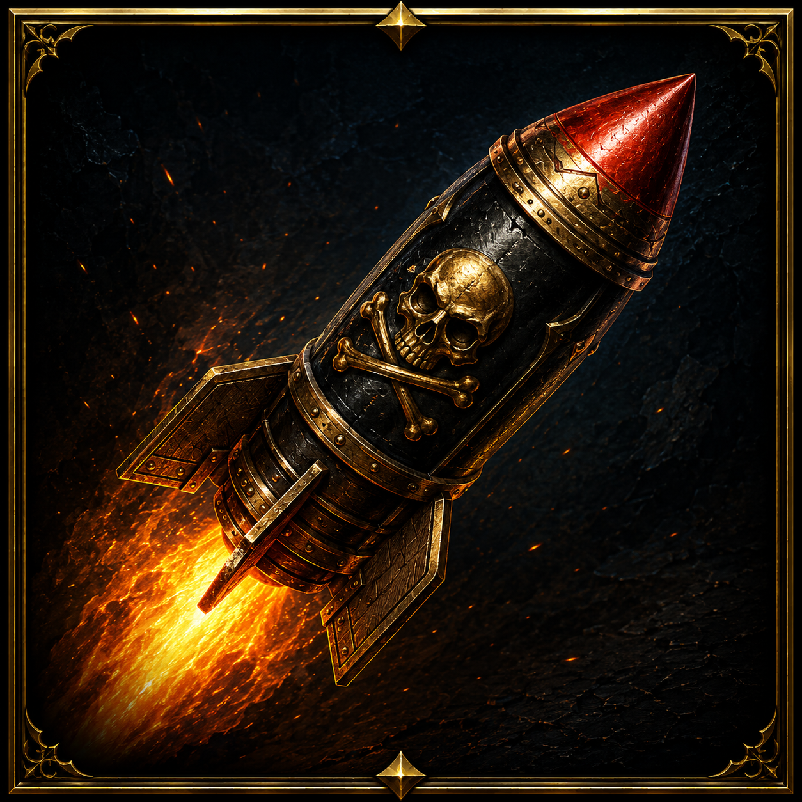
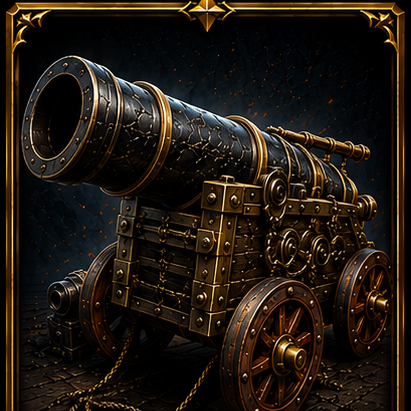
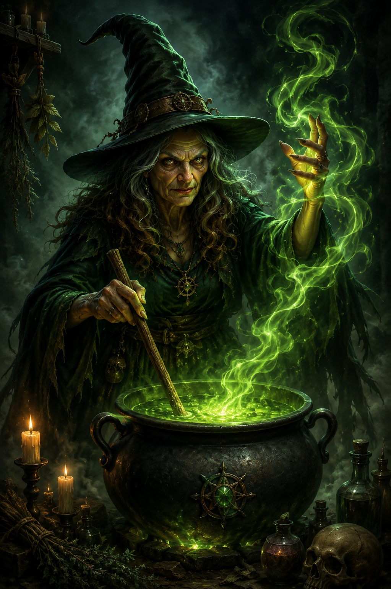

Şikayetini ya da önerini kısaca yaz — geliştiriciye iletilecek.
Yardımcı Kaptan — Hedef Seç
Ayarlar
Grafik
Alt menü boyutu: 100
Oyuncu adı boyutu: 100
Mini harita boyutu: 100
Kontrolcü
Kamera Tuşları
Kamera Yukarı: W
Kamera Aşağı: S
Kamera Sol: A
Kamera Sağ: D
Merkeze Dön: G
Kısa Yol Tuşları
1-8: Hotbar
Diğer Tuşlar
Haritayı Değiştir: Space
Saldır: Q
Saldırıyı İptal Et: E
Ses
Yakında burada müzik ve efekt ses seviyesi ayarları olacak.
Hesap Ayarları
Kullanıcı adı-
Şifre değiştirme ve e-posta ayarları yakında eklenecek.
Engellenenler Listesi
Henüz kimseyi engellemedin. Sohbetten bir oyuncuyu engelleme özelliği yakında eklenecek.
Profil
Kullanıcı-
Filo-
Sınıf-
Seviye-
Tecrübe Puan-
ID-
Elit Puan-
Batırılan gemi (NPC)-
Öldürülen Canavarlar (Boss)-
Batırılan Oyuncu (PVP yok)0
Savaş Puanı (PVP yok)0
Kule Hasar Puanı (kule sistemi yok)0
Etkinlik Takvimi
-
Sınıf-
Seviye-
Tecrübe-
Batırılan gemi-
⚓ DÜNYA HARİTASI ⚓
Şu an hangi haritada olduğunu gösterir. Geçiş, harita kenarına gidip beliren "Haritadan Atla" butonuyla olur. Diğer haritalar ilerledikçe eklenecek.
x Bulunduğunuz Konum
-- FPS
-- MS
🗺️
Harita
1/1
Konum
1 A



Hedef
HP
EXP
CEPHANE▸
1
2
3
4
5
6
7
8
KOMUTLAR▸
SALDIR
DURDUR
GÜLLELER
ZIPKIN
MALZEME0
🎁BONUS0
YARDIM ÇAĞRISI
TAMİR∞
Bir kutuya sürükle
Bir kutuya sürükle (sadece canavarlara işler)
Bir kutuya sürükle
Bonus Haritalar
Boş suya tıkla: gemini oraya sür
Düşman gemisine tıkla: hedefe kilitlen, menzildeyken sürekli ateş eder
Gemiler sana saldırmaz, sen ateş edince karşılık verirler
Hareket ederken kilit bozulmaz, tekrar tıklamana gerek yok
Kilidi bırakmak için hedefe tekrar tıkla ya da "Hedefi Bırak"a bas
Saldırı almadan birkaç saniye geçince gemi kendini onarır
Geminiz Battı
Düşman toplarına yenildiniz.
Tecrübe: 0
Çıkış yapılıyor: 10 sn
Saldırıya uğrarsan çıkış otomatik iptal olur.
AÇIK DENİZ
Hesabına giriş yap
Hesabın yok mu?Yeni Üye
AÇIK DENİZ
Filonu sür, düşman gemilerini bul ve batır.
Sol tık (boş su): gemini o noktaya sürer
Sol tık (düşman gemisi): hedef alır, sen menzile girdiğinde toplar otomatik ateş eder
Gemiler pasiftir, sen saldırmadıkça sana ateş etmezler; ateş ettiğin gemi karşılık verir
Gemin yalnızca tıkladığın yere gider, kendiliğinden hareket etmez
Saldırı almadan birkaç saniye geçince gemi kendini yavaşça onarır
Adaların üzerinden geçemezsin, etrafından dolaş
Batırdığın gemilerin yerine bir süre sonra yenisi belirir
Genel BakışElit GemilerEnvanterPazarGörevlerSıralamaMojuo
Aktif Gemi
👤
Kullanıcı
-
⭐
Seviye
1
🚢
Sınıf
1. Sınıf
❤️
Can
12000 / 12000

Top
25 / 30
🪙
Altın
0
📖
Tecrübe
0
⚔️
Batırılan Gemi
0
Yükleniyor...
Mevcut Rütbe
-
→
Üst Rütbe
Rütbe Puanı: 0Bir Üst Rütbe: -
Rütbe hesaplamasında tecrübe puanı, elit puan ve seviye kullanılır. [(Tecrübe puan / 750) + (Elit puan / 10.000)] * Seviye
Mevcut Savaş Rütbesi
-
→
Üst Rütbe
Savaş Puanı: 0Bir Üst Rütbe: -
Savaş Rütbesi, canlı PVP'de kullanılacak ayrı bir rütbe sistemidir — şimdilik batırdığın gemi/boss sayısına göre ilerler, PVP eklenince oyuncu batırma da eklenecek.
Bonus haritalardan (Dalga Savunması) kazandığın özel ödüller burada süreleriyle birlikte listelenir. Süresi dolan öğe otomatik kalkar.
1. Sınıf
Hasar bonusu+0%
Can bonusu+0%
Hız bonusu+0%
Top kapasitesi30
Bir tasarım seç
Bu bir kozmetik gemi derisidir — hasar/can/hız/top kapasitesi yine ulaştığın en yüksek sınıftan gelir, sadece görünüm değişir.
Depo
Pazardan satın aldığın toplar burada bekler. Birine tıkla, gemiye yüklensin.
0 adet
Gemide
Gemine yüklü toplar. Birine tıkla, depoya geri alınsın.
0 / 0
Depo
Pazardan satın aldığın Zıpkın Atarlar burada bekler. Birine tıkla, gemiye yüklensin.
0 adet
Gemide
Gemine yüklü Zıpkın Atarlar. Birine tıkla, depoya geri alınsın.
0 adet
⚓ Direk sistemi yakında eklenecek — her direk parçası geminin canını artıracak.
🛒 Ekipman
Top
1 top = 120 altın. Her top hasarını doğrudan artırır.
Top gemiye takılı ekipman, gülle ise tükenen mermi. Alt bardaki GÜLLELER kutusundan hangisinin aktif olacağını seçersin.
Oyuk Gülle
Normal hasar verir (1x).
Fiyat: 5 altınDepoda: 0
Elit Gülle
%60 daha fazla hasar verir (1.6x).
Fiyat: 30 altınDepoda: 0
🧪 Malzeme
Hız Taşı
5 saniye boyunca hızını 2 katına çıkarır.
Fiyat: 15 altınDepoda: 0
Barut
Açık/Kapalı — her atışta 1 stok düşer, o atışa +%10 hasar.
Fiyat: 20 altınDepoda: 0
Zırh
Açık/Kapalı — her hasar alışta 1 stok düşer, o hasarı -%10 azaltır.
Fiyat: 20 altınDepoda: 0
Roket
Açıkken hedefe kilitliyken her 10 saniyede bir otomatik yaklaşık 6000 hasarlık roket fırlatır.
Fiyat: 150 altınDepoda: 0
Gümüş Zıpkın
SADECE yeni "canavar" hedeflerine işler, gemilere hiç zarar vermez. Alt bardaki ZIPKIN butonundan seçilir, her atışta 1 stok düşer.
Fiyat: 60 altınDepoda: 0
Altın Zıpkın
Gümüş Zıpkın'dan çok daha güçlü — SADECE canavarlara işler, gemilere zarar vermez. Alt bardaki ZIPKIN butonundan seçilir, her atışta 1 stok düşer.
Fiyat: 200 altınDepoda: 0
Her saat başı sıfırlanır. En yüksek teklifi veren, süre dolunca o malzemeyi kazanır (Top: 1 adet, Gülleler: 1000 adet, Hız Taşı: 100 adet, Roket: 30 adet, Altın Zıpkın: 50 adet). Verdiğin HER teklif (kazanmasan bile) altınını anında çeker — kaybedersen sonradan otomatik iade alırsın. Burada doğrudan satın alma YOK, sadece teklif verilir.
Seviye1
Yükleniyor...

Cadılardan yardım alarak kullanışlı ürünler elde et?
Olası Ödüller
• Barut • Zırh • Oyuk Gülle • Elit Gülle • Roket • Hız Taşı • Gümüş Zıpkın • Altın Zıpkın • Harita Parçası
Her kullanımda listedeki ödüllerden biri rastgele kazanılır.